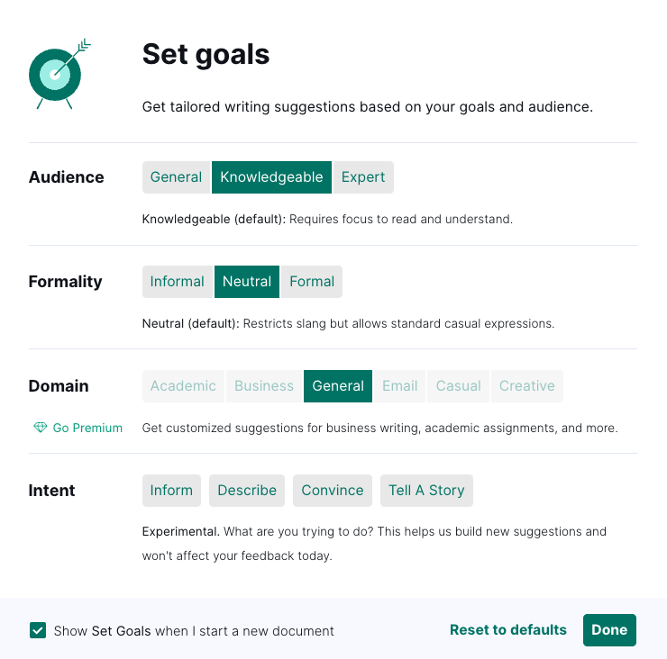
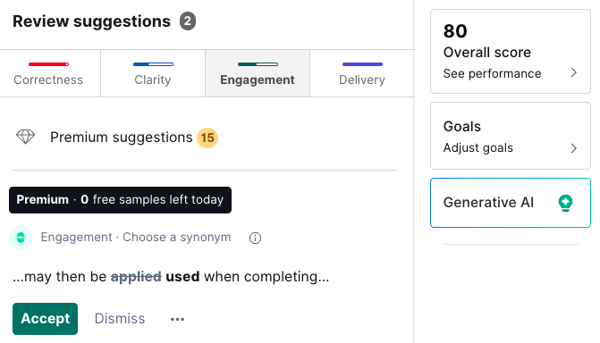

Computational Tools for Writing#
Learning Objectives:#
By the end of this session you should:
Have an awareness of Grammarly.
Have an awareness of how we may use arteficial intelligence to help with writing.
Have an awarenss of the limitations of using AI to help with writing.
Review feedback provided on recent writing assignments.
In this session, you will briefly be introduced to how we can use AI tools to help us when writing. The rest of this session is avaliable for you to use as you wish, however, it is recommended that you use this time to begin working on the summative end of semester lab report.
Grammarly#
A very simple way to ensure that the quality of your written work is up to scratch is to use a SPAG checker (spelling, punctuation and grammer). Software like Microsoft Word or Google Docs have built in SPAG checkers and these are very useful for spotting small mistakes, however tools like Grammarly also use AI to help enhance writing.
We recommend using Grammarly as it can be used either as a website, or as an extension to your browser that allows it to run when you are writing in Google Docs or Overleaf. Additional advantages of using Grammarly is that you are able to give it information about the purpose of your writing from which it will then give you suggestions to improve it. For example, take a look at the menu taken from the Grammarly website below:

Here we can indicate who the audience is and what the tone of the report should be, based on this Grammarly will provide suggestions of how the writing could be ammended for improved delivery:

ChatGPT#
This semester we have already seen how we can use ChatGPT to help us solve coding problems, but we can also use it to review and make suggestions of how to improve our writing, for example by checking for gramatical mistakes and improving writing style. This may be an example of a paragraph drafted for the introduction of a report. I can use ChatGPT to highlight any mistakes and provide suggestions of how to improve the introduction by engineering a suitible prompt and providing it with this passage. For example:
Writing Prompt
“I have written the following for my lab report introduction:
“In this experiment, we looked into the motion of a pendulum to try to see how the period of its swings relates to how long the pendulum is. According to what we learned about simple harmonic motion (SHM), there’s this idea that the period \(T\) of a pendulum, which means how long it takes to complete one full back-and-forth swing, can be found using \(T = 2 \pi \sqrt{\frac{l}{g}}\). Here, \(L\) stands for the length of the pendulum and \(g\) is gravity’s acceleration. This formula sort of suggests that if you make the pendulum longer, the period should get longer too, but not in a straightforward way, more like the square root of the length. By changing the pendulum’s length and seeing how long it takes to swing, we wanted to see if what we observe matches up with this idea.”
Can you make suggestions of how I can improve it to be clear and concise so that the writing style is appropriate for an academic report, for example by using the passive voice. Please suggest the changes I could make as a numbered list.”
The prompt above provides ChatGPT with sufficient information and let’s it know what my objectives are for improving it e.g. improving the clarity and conciseness. The response is given below.
ChatGPT Response
Certainly! Here are suggestions to improve clarity, conciseness, and the academic tone of your introduction:
Use passive voice to create a formal tone:
Instead of “we looked into the motion,” use “the motion was investigated.”
Eliminate informal phrases and words:
Replace “try to see how” with “determine the relationship between.”
Replace “there’s this idea that” with “it is understood that.”
Clarify technical terms and formulae:
Ensure consistent notation (e.g., use \(l\) for length if introducing it as \(l\), not \(L\)).
Remove redundant phrases:
Remove “which means how long it takes to complete one full back-and-forth swing” as it is understood from the context.
Formalize expressions:
Replace “sort of suggests” with “indicates”.
Replace “not in a straightforward way, more like” with “in accordance with.”
Streamline the structure:
Break down the information into clearer, more direct sentences.
Here is a revised version incorporating these suggestions:
“In this experiment, the motion of a pendulum was investigated to determine the relationship between the period of its swings and the length of the pendulum. According to simple harmonic motion (SHM) theory, the period \(T\) of a pendulum can be calculated using the formula \(T = 2 \pi \sqrt{\frac{l}{g}}\), where \(l\) represents the length of the pendulum and \(g\) is the acceleration due to gravity. This formula indicates that the period increases with the length of the pendulum, following a square root relationship. By varying the length of the pendulum and measuring the corresponding period, the experimental observations were compared to the theoretical predictions.”
This revised version maintains the necessary information while presenting it in a clearer and more academically appropriate manner.
At this point, it would your responsibility to review the suggestions and decide which ones you would like to use. You may wish to then specify that the paragraph is written using suggestions 3 and 4, for example. You may wish to provide additional prompts to provide further suggestions with more focus.
Additional ways that you could use chatGPT to help you write could include:
Asking it to help you reduce your word count to ensure you do not exceed the assignment requirements.
Asking it to check that your use of tense are correct throughout.
There are also limitations to ChatGPT that you should be aware of when you decide to use it. In the dropdown below I have taken some information prepared by Dr Simon Goodwin and Dr Susan Cartwright about LLM (large language models) and scientific writing. Please take the time to read this.
Scientific Language and LLMs
By Simon Goodwin & Susan Cartwright (v. 9/2023)
This is an additional helper document about a common thing that happens when people use LLMs like ChatGPT to copy-edit their English: the writing becomes unscientific and very prone to hyperbole.
When writing about science for other scientists (which is what you will be doing almost all of the time) you want to keep your language and tone fairly neutral. You deliver the information and leave it up to the reader to decide if it is exciting, unprecedented, incredible, or a variety of other superlatives. When describing how big or small, light or heavy etc. something is you give the quantitative values and some context, but without it being staggering, inmmense etc.
The use of superlative adjectives and descriptions is something scientific writing for other scientists should avoid. Scientific writing is about giving facts and information, and on the whole leaving decisions on how important and exciting this is to your reader.
Over-the-top descriptions and writing are usually described as ‘hyperbole’ – exaggerated or extravagant statements (note, pronounced hyper-bol-ee). It isn’t what we expect in scientific writing, but it is becoming common as LLMs like ChatGPT copy-edit writing because ChatGPT has a terrible habit of adding hyperbole.
One can debate if this sort of over-the-top writing is suitable for science aimed at general audiences (we would both say it usually isn’t, but you don’t want to be quite as dry as science for scientists), but it is quite common. Because over-the-top, hyperbolic writing is common on the internet it is common in training datasets for LLMs, which means LLMs will like to use it (as statistically they see it as a good choice based on their training).
This document has one aim – to get the following message over:
WHEN USING AN LLM TO COPY-EDIT WATCH OUT FOR HYPERBOLE AND EDIT IT OUT.
When reading the copy-edit of your writing keep an eye out for over-the-top wording and superlatives and remove (almost) all of them.
It isn’t that there isn’t a place for superlatives in scientific writing, it is that they need to be used extremely sparingly. (There was one – we used ‘extremely’ to make a point.)
Part of the problem with ChatGPT adding hyperbole is that GPT4 in particular has a habit of replacing words with not-quite-synonyms. So if you write ‘interesting’ it might decide to replace this with ‘intriguing’ or ‘captivating’ (if you’ve read the guide to LLMs – which you should – it did this to some of SG’s writing). Now, ‘intriguing’ is a word that might well have a place in scientific writing (‘an intriguing result’), but ‘captivating’ almost certainly doesn’t (it isn’t up to you to decide if someone should be ‘captivated’ by some science). Should something scientific be described as ‘staggering’ – almost certainly not. Things in science are very rarely ‘immense’, and does anything you are trying to describe in scientific terms have a ‘frenzy of activity’?
In scientific writing we are trying to present facts and information, and often an interpretation of those. We want to do this as dispassionately as possible and let the facts speak for themselves. This is quite a dry way of writing, but it is deliberately dry. It’s the same principle that we apply when we use the passive voice (‘the experiment was set up’ rather than ‘I set up the experiment’ – note that this is another thing that grammar checkers and the like will often object to!): the science should stand on its own, independent of who did the work, and what they might think about it.
As an example, here is what ChatGPT produced when SC asked it to “write a paragraph on the atmosphere of Venus for a scientific audience” (of course, you should not ask it to do anything like this, but it will often produce similar language when asked to “rewrite” something):
“The atmosphere of Venus, while intriguing, presents a complex and extreme composition that has long puzzled scientists. Dominated by carbon dioxide (CO2), which constitutes roughly 96.5% of its composition, Venus’s atmosphere is extraordinarily dense, with surface pressures exceeding 90 times that of Earth’s. This results in a surface temperature that soars to an astonishing 465 degrees Celsius (869 degrees Fahrenheit) due to the greenhouse effect caused by the dense CO2 and thick cloud cover. The clouds consist mainly of sulfuric acid droplets and shroud the planet, making surface observations challenging. Understanding the intricate dynamics of Venus’s atmosphere, including its super-rotational winds, high-altitude sulfuric acid clouds, and the mysterious absence of water vapor, remains a central focus for planetary scientists seeking to unravel the mysteries of this harsh and inhospitable world.”
The underlined words are typical hyperbole: ‘extraordinarily’, ‘soars’, ‘astonishing’ and ‘mysterious’ introduce judgements that should be left to the reader; ‘complex and extreme’ is not only judgemental but also wrong (an atmosphere that is 96.5% CO2 is not particularly ‘complex’; nor is it ‘extreme’, since the atmosphere of Mars is also almost entirely CO2 – it’s the Earth’s atmospheric composition that is anomalous); ‘puzzled’ and ‘mysteries’ greatly overstate the extent to which Venus’ atmosphere is not understood.
(These are not the only things wrong with this paragraph: would any ‘scientific audience’ want a temperature in Fahrenheit? Does cloud cover contribute to the greenhouse effect? Do the presence of clouds and absence of water vapour qualify as ‘dynamics’? But here we are focusing on the hyperbolic language.)
SC regenerated the paragraph several times, and each regeneration produced similar levels of inappropriately judgemental language: ‘an incredibly harsh and hostile environment’, ‘a thick and choking blanket’, ‘causing surface temperatures to soar to scorching levels’, ‘a unique and enigmatic atmosphere’, ‘staggering levels’, ‘intriguing questions’, etc. (It also produced three different numerical values for the surface temperature and several different descriptions of the chemical composition, agreeing on 96.5% CO2 but not on the rest. In no case was nitrogen mentioned, though N2 actually accounts for most of the 3.5% that isn’t CO2.)
ChatGPT seems to have a habit when asked to ‘write for a scientific audience’ of adding a lot of hyperbole – this is the exact opposite of what it should do when writing for a scientific audience. And it is definitely something you want to edit away if it sneaks into your copy-edit.
ChatGPT is not perfect or ‘magic’. It will quite often not really do what you want it to, and YOU have to take responsibility for the words you submit. Always read and edit any ChatGPT copy-editing of your words and make sure they are suitable for your audience.
If ChatGPT returns something full of hyperbole and unscientific language you can try another prompt to hopefully remove (most of) it, but if that doesn’t work you are going to have to remove it by hand. Given you should be editing whatever GPT has produced as a copy-edit anyway, this is just another part of that process.
A report or essay containing a lot of hyperbole will get a lower mark than one without. Hyperbole is not suitable or appropriate in almost any assessment – certainly not if your writing is aimed at a scientific audience.
I am confident that you will find creative ways to introduce AI into your writing workflow, but before you do, it is worth reviewing the next section about the departments expectations of its use.
Ownership of Your Work#
At this point it is worth reminding yourself that you must retain ownership of your work. When working with chatGPT do not blindly accept all of the suggestions it provides, instead review each of them critically and decide whether or not they are appropriate to be included.
Ownership: A Guide
By Dr Mark Quinn.
YOU MUST HAVE OWNERSHIP OF ANY MATERIAL YOU SUBMIT FOR ASSESSMENT. This is usually as an individual, but sometimes can be as part of a group.
Having ownership means that you understand (to an appropriate degree) what you have submitted, and you could defend and justify what you did and how you did it. This means that you could talk somebody else through your work explaining what you did, and why you did it that way.
This does not mean that it is always particularly good or right – we all make mistakes (often in retrospect rather silly mistakes, but sometimes subtle ones), but you should know why you thought at the time that what you were doing was sensible. Sometimes you might have been doing something in a last minute rush and so made various (silly/sloppy) mistakes (we all try not to do this, but we almost all end up doing this sometimes) – but these should be YOUR mistakes.
We expect you to understand what you submit to an appropriate degree. You should be able to justify why you did something, why you thought some information was correct, or why you thought that something worked and produced the right answers.
Why we say ‘to an appropriate degree’ is that there are times when you will extract information or ideas which either you misinterpret or are wrong. Depending on your level of study it may or may not be reasonable to think that you should have realised that you were wrong. The depth and level of critical understanding we expect you to show increases throughout your degree, and there are mistakes we would be very forgiving of at L1 that we would not be at L3 or L4.
The ‘appropriate degree’ also extends to the sources we expect you to use (and cite). Only use and cite sources that you understand enough to be confident that they do indeed say what you claim they say. Never cite sources to ‘sound clever’ or because you found a source that cited them (it is usually very obvious to us that you couldn’t have understood, or couldn’t have found, that source).
Individual Work
Many of your assessments are meant to be completed by you as an individual to show your learning and understanding.
This does not mean that you can’t seek help, advice, and hints from staff, other students, or anybody else who might be useful, or that you can’t look at notes and textbooks, search the internet, or use AI tools to HELP you. Indeed, we encourage you to FAIRLY use any sources of help and assistance that you find useful, and quite often you couldn’t complete an assessment without using various sources of help and assistance.
What retaining ownership means in individual work is that you understand what you eventually submit, and that you could defend why you did what you did. This doesn’t have to mean it is correct, but that any mistakes are YOUR mistakes.
Where things become unfair uses of assistance is if you just copy an answer from another student (collusion), take words/maths/code from a source with only minor edits (plagiarism), pay somebody else to do the work (contract cheating, which is also illegal), or just copy with only minor edits the output of an AI/LLM (a form of plagiarism). In all these cases you are taking something produced by someone/thing else and putting your name to it.
Group Work
In some assessments you will be part of a group, and what you submit is a combination of the work of everybody in the group. You should ensure that you retain ownership of YOUR part of the group work.
When working in a group you have to trust that others in the group will work fairly and have ownership of their parts of the assessment.
Good record keeping is essential in group work. You want to be able to show who did what parts, so if there is a problem (e.g. with plagiarism) in one part of the report you (and we) know who is responsible for that part.
Keep emails and chats, it is an extremely good idea to keep documents and drafts on something which has an edit history (Google Drive will do this for you) so you can show who did what, who added what, and when this was done.
This is generally good practice so you cover yourself if something goes wrong or there is a problem. Always try to have an electronic paper trail that you can use to show what you did and when you did it.
If you are still unsure of what constitutes unfair means, please refer to this guide made by Dr Simon Goodwin - Unfair Means: Student Guide.
Activities#
Using a Large Language Model#
From the previous weeks you should have a complete report for the conservation of momentum experiment you performed in the labs. You should now take snippets of what you have written in this report and feed them into a large language model like ChatGPT.
Try to engineer prompts which highlight where improvements in your writing could be made, criticially evalualte if they are approproate, and make note of any suggestions you may want to keep in mind for writing your next report.
You may wish to do this for a few sections of the report you have writte.
Report Time (Yay!)#
You are now free to use the remainder of the session as you wish, however it is suggested that you use the remaining time to begin working on your end of semester lab report due in January.
I know it is week 12 and you may be tempted to head home, but you’ll thank yourself later if you’ve got a headstart on a portion of the report before Christmas (this will also give you more time to prepare for exams!).
You can also use this time to ask for feedback or help on any other topics that have been covered this semester.
Merry Chirstmas!#
** I hope that you have enjoyed the skills workshops this semester** - please do take some time to reflect on how far your skills have developed!
I hope you have a wonderful Christmas break and I look forward to seeing you again after your exams!
Ross